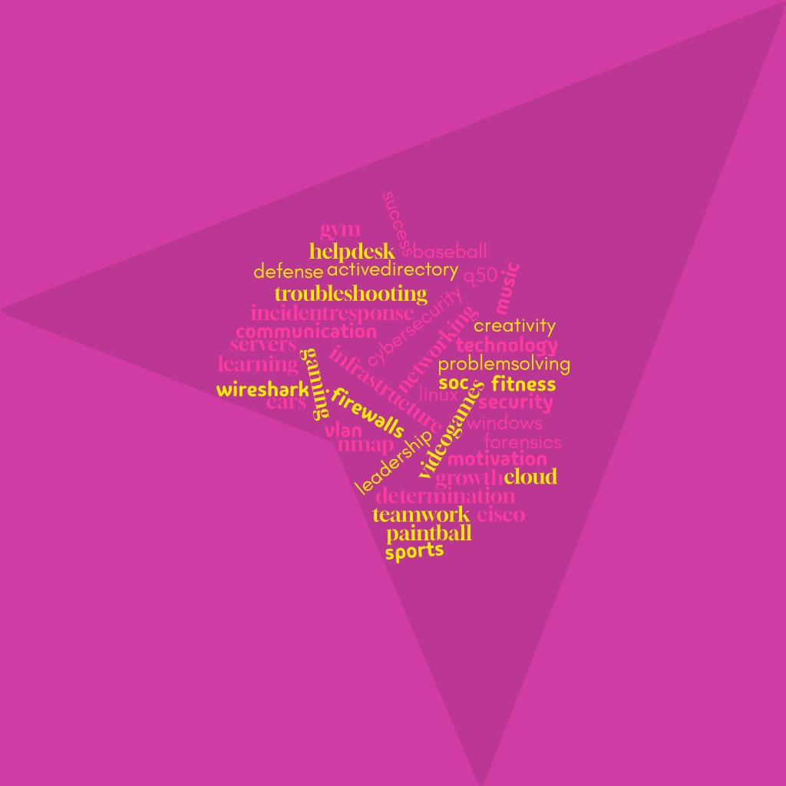

About Me
Hello, my name is Caleb Wilkerson. I am currently a Senior at Houston Community College pursuing an Associate’s Degree in Computer Science. My expected graduation date is May 8th, 2026.
My goal is to start in a Help Desk or SOC Analyst role and continue building my knowledge while moving up in the cybersecurity field.
I am interested in networking, troubleshooting, cyber defense, incident response, and enterprise security concepts.
Outside of technology, I am involved in baseball and paintball, which helped me develop teamwork, communication, and leadership skills.
Education & Coursework
Houston Community College
Associate’s Degree: Computer Science
Expected Graduation: May 8th, 2026
My coursework helped me build a strong foundation in networking, cybersecurity, troubleshooting, Windows systems, and enterprise IT concepts.
Relevant Cybersecurity & IT Coursework
- Admin Windows Server Operating Systems (ITMT 1357)
- Computer System Forensics (ITSY 2443)
- Fundamentals of Networking Technology (ITNW 1425)
- Information Technology Security (ITSY 1342)
- Intrusion Detection (ITSY 2330)
These courses helped me develop hands-on experience with networking, Windows Server administration, digital forensics, cybersecurity fundamentals, intrusion detection, and enterprise IT concepts.
Cybersecurity Skills
Technical Skills
- Windows & macOS Support
- Networking Basics
- Wi-Fi & Router Configuration
- OS Installation
- Hardware Troubleshooting
- Microsoft 365
Cybersecurity Skills
- Threat Detection
- Malware Identification
- Digital Forensics
- Incident Response
- System Hardening
- Vulnerability Awareness
Professional Skills
- Communication
- Customer Service
- Documentation
- Problem Solving
- Teamwork
- Adaptability
Certifications & Training
CompTIA Security+
CompTIA Network+
DoD Cyber Sentinel Skills Challenge
CCST – In Progress
CompTIA A+ – In Progress
Work Experience
Smart City Networks – Technician I
January 2026 – Present
Provided Tier 1 technical support in a fast-paced event environment. Troubleshot connectivity and networking issues while assisting users and devices.
Freelance IT Support
February 2023 – Present
Performed malware removal, operating system installs, Wi-Fi setup, router configuration, hardware upgrades, and remote troubleshooting support.
Projects & Hands-On Experience
Dangerous Drives [NG]
Worked with a USB thumb drive that needed to be checked for malicious files while maintaining file integrity.
Tools/Concepts: Virus scanning, file analysis, digital forensics, malware identification, Windows systems.
Preventative Protection: Thwarting the Imminent Threat [NG]
Worked on protecting a system from outside threats through cyber defense and incident response concepts.
Tools/Concepts: Incident response, system hardening, cyber defense, vulnerability protection.
Home Network VLAN Segmentation Lab
Built a home networking lab using a managed Cisco switch to simulate an enterprise-style network environment.
Configured separate VLANs for users, guests, and management traffic while testing inter-VLAN isolation.
Skills & Technologies: VLANs, Cisco Switching, Layer 2 Networking, Access Control, Network Segmentation
Home Lab Active Directory Environment
Built and maintained a personal Active Directory home lab using Windows Server as a domain controller.
Created user accounts, security groups, organizational units, and applied Group Policy Objects.
Skills & Technologies: Active Directory, Windows Server, Group Policy, User Management
Reflections & Lessons Learned
Throughout my cybersecurity journey, I learned that cybersecurity is not only about technical skills but also patience, attention to detail, communication, and problem solving.
Hands-on labs and troubleshooting scenarios helped me better understand how real-world cybersecurity and IT environments operate.
My goal moving forward is to continue improving my knowledge in SOC operations, networking, threat analysis, and incident response.
Personal Word Cloud
This word cloud represents both my technical interests and personal interests. It highlights the skills, technologies, hobbies, and goals that are important to me.

Resume & Supporting Documents
You can download and view my professional resume below.
Contact & Professional Presence
Email: calebbobey@gmail.com
LinkedIn: View My LinkedIn Profile
Location: Rosharon, Texas